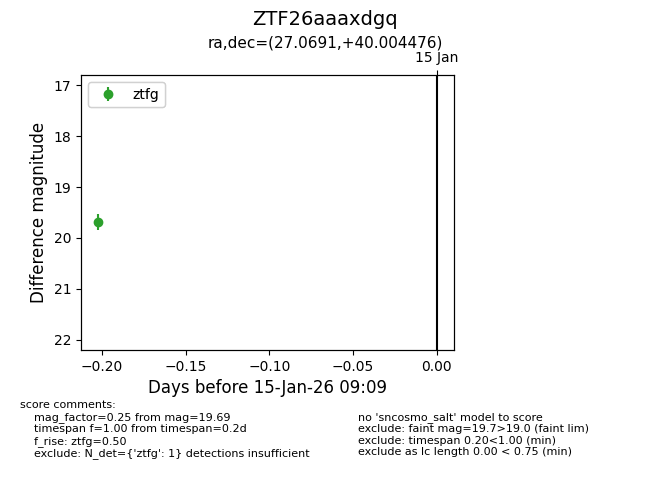
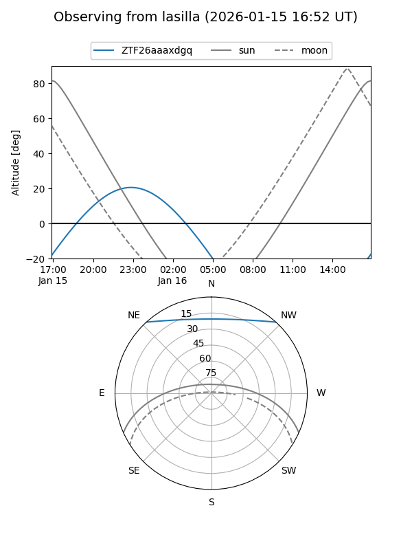
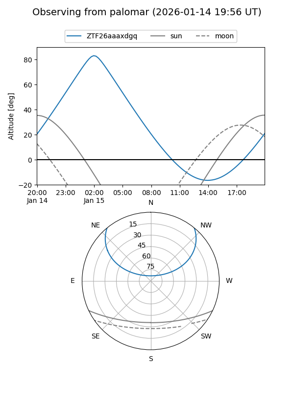

ZTF26aaaxdgq
Target ZTF26aaaxdgq at 2026-01-15 09:10
Aliases and brokers:
FINK: link
Lasair: link
ALeRCE: link
alt names
ZTF26aaaxdgq (ztf,fink_ztf)
Coordinates:
equatorial (ra, dec) = 27.0691,+40.00448
equatorial (HMS+DMS) = 01:48:16.58,+40:00:16.11
galactic (l, b) = (134.5974,-21.57629)
Flags:
Photometry:
last ztfg=19.69
1 ztfg detections
Lightcurve

Visibility


Additional plots